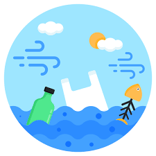
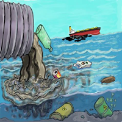

Entre las principales causas de la contaminación del agua se encuentran las descargas de aguas residuales domésticas sin tratamiento, los desechos industriales, el uso excesivo de fertilizantes y pesticidas en la agricultura y los derrames de petróleo.
Además, la acumulación de basura, especialmente plásticos, la minería y la deforestación contribuyen significativamente al deterioro de la calidad del agua. Estas actividades introducen sustancias tóxicas que afectan tanto a los ecosistemas como a la salud humana.

La contaminación del agua provoca graves consecuencias ambientales como la muerte de peces y otras especies acuáticas, la pérdida de biodiversidad y la destrucción de ecosistemas enteros. También favorece la proliferación de microorganismos dañinos.
En el ámbito social, millones de personas carecen de acceso a agua potable segura, aumentando el riesgo de enfermedades como cólera, hepatitis, diarrea e infecciones gastrointestinales. Además, las actividades económicas relacionadas con la pesca y el turismo pueden verse afectadas.

Para reducir la contaminación del agua es necesario mejorar los sistemas de tratamiento de aguas residuales antes de que sean vertidas en ríos, lagos y mares. Esto permite eliminar una gran cantidad de contaminantes que afectan la calidad del agua y la salud de los ecosistemas.
Otra alternativa consiste en disminuir el uso de plásticos de un solo uso y fomentar el reciclaje. Además, es importante realizar campañas de limpieza en playas, ríos y cuerpos de agua para evitar la acumulación de residuos que perjudican a la fauna y flora acuática.
En el sector agrícola se debe promover el uso responsable de fertilizantes y pesticidas para evitar que estas sustancias lleguen a las fuentes de agua. Asimismo, las industrias deben cumplir con normas ambientales estrictas y adoptar tecnologías más limpias para disminuir la generación de contaminantes.
La educación ambiental y la participación ciudadana son fundamentales para crear conciencia sobre la importancia de cuidar el agua. Mediante acciones individuales y colectivas es posible conservar este recurso indispensable para la vida.